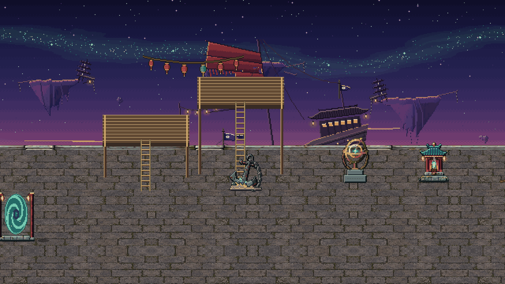

Quests
Current
Done 156
Main · Chapter 17 · the story
The Lantern Run
◆ tracked · step 1 of 2 · to the Arrival Quay
Near you · Azure Expanse6
Clear Skies
Dockmaster Fu
A Blade That Answers
Smith Hong
Today's missionseach 20 contribution and 127 taels
Mist Lotus
gather 0 / 3
Jadeiron
mine 0 / 4
Kitchen duty
cook 0 / 3
Teas for the infirmary
deliver 0 / 3
The day's round86 / 100
Next at 100: 15 Spirit Stones, 2 Spirit Jade · for every character
✓
✓
✓
20
40
60
100
3 ready to open
Companions2
Iron Ox's Debt
Tie Niu
Jade River Valley26
Echoes in Bronze
Elder Hu · and 25 more
Stoneford 19 · Lotus Ferry 5
Greyreed Hamlet 1 · Jade Sect 1
Tap a stack to spread it.
Greyreed Hamlet 1 · Jade Sect 1
Tap a stack to spread it.
Main · Chapter 17
The Lantern Run
From Warden He, at the Starsea Launch
You are here
Starsea Launch
Starsea Launch
by skiff
Arrival Quay
Lanternfall Harbor
Lanternfall Harbor
Your chart ends at a field of lanterns. The ring has lit for you. Sail, and tell the harbour there who sent you.
➤ Sail the Lantern Run from the Starsea Launch
○ Report to the harbourmaster on the Arrival Quay
Rewards
A Codex entry: Lanternfall Harbor
Realm progress: 4% of the stage
Then the story goes on: Crystal and Jade
Go
Untrack